2.1.3.2.1. Variational Gaussian Mixture Models¶
The API is identical to that of the GMM class, the main
difference being that it offers access to precision matrices as well
as covariance matrices.
The inference algorithm is the one from the following paper:
- Variational Inference for Dirichlet Process Mixtures David Blei, Michael Jordan. Bayesian Analysis, 2006
While this paper presents the parts of the inference algorithm that are concerned with the structure of the dirichlet process, it does not go into detail in the mixture modeling part, which can be just as complex, or even more. For this reason we present here a full derivation of the inference algorithm and all the update and lower-bound equations. If you’re not interested in learning how to derive similar algorithms yourself and you’re not interested in changing/debugging the implementation in the scikit this document is not for you.
The complexity of this implementation is linear in the number of
mixture components and data points. With regards to the
dimensionality, it is linear when using spherical or diag and
quadratic/cubic when using tied or full. For spherical or diag
it is O(n_states * n_points * dimension) and for tied or full it
is O(n_states * n_points * dimension^2 + n_states * dimension^3) (it
is necessary to invert the covariance/precision matrices and compute
its determinant, hence the cubic term).
This implementation is expected to scale at least as well as EM for the mixture of Gaussians.
2.1.3.2.2. Update rules for VB inference¶
Here the full mathematical derivation of the Variational Bayes update
rules for Gaussian Mixture Models is given. The main parameters of the
model, defined for any class ![k \in [1..K]](../_images/math/9cba229e154ce02473b0540fbfd3e565d5e2a055.png) are the class
proportion 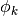, the mean parameters 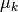, the
covariance parameters 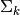, which is characterized by
variational Wishart density, 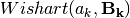, where
are the class
proportion 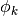, the mean parameters 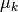, the
covariance parameters 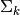, which is characterized by
variational Wishart density, 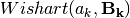, where
 is the degrees of freedom, and
is the degrees of freedom, and  is the
scale matrix. Depending on the covariance parametrization,
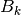 can be a positive scalar, a positive vector or a Symmetric
Positive Definite matrix.
is the
scale matrix. Depending on the covariance parametrization,
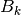 can be a positive scalar, a positive vector or a Symmetric
Positive Definite matrix.
2.1.3.2.2.1. The spherical model¶
The model then is
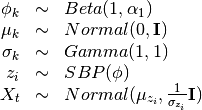
The variational distribution we’ll use is
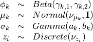
2.1.3.2.2.1.1. The bound¶
The variational bound is
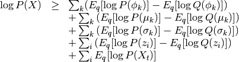
The bound for
![\begin{array}{rcl}
E_q[\log Beta(1,\alpha)] - E[\log Beta(\gamma_{k,1},\gamma_{k,2})]
&=&
\log \Gamma(1+\alpha) - \log \Gamma(\alpha) \\ &&
+(\alpha-1)(\Psi(\gamma_{k,2})-\Psi(\gamma_{k,1}+\gamma_{k,2})) \\ &&
- \log \Gamma(\gamma_{k,1}+\gamma_{k,2}) + \log \Gamma(\gamma_{k,1}) +
\log \Gamma(\gamma_{k,2}) \\ &&
-
(\gamma_{k,1}-1)(\Psi(\gamma_{k,1})-\Psi(\gamma_{k,1}+\gamma_{k,2}))
\\ &&
-
(\gamma_{k,2}-1)(\Psi(\gamma_{k,2})-\Psi(\gamma_{k,1}+\gamma_{k,2}))
\end{array}](../_images/math/26559fa804b885c60ac6e537bc6dd13552edb739.png)
The bound for
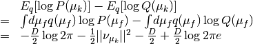
The bound for 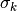
Here I’ll use the inverse scale parametrization of the gamma distribution.
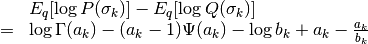
The bound for z
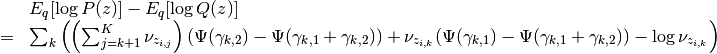
The bound for 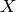
Recall that there is no need for a 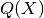 so this bound is just
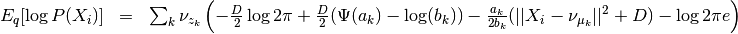
For simplicity I’ll later call the term inside the parenthesis ![E_q[\log P(X_i|z_i=k)]](../_images/math/c0649a6a3aa920dfc51c38dbdc02218e3dec88b9.png)
2.1.3.2.2.1.2. The updates¶
Updating 

Updating 
The updates for mu essentially are just weighted expectations of regularized by the prior. We can see this by taking the gradient of the bound with regards to 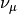 and setting it to zero. The gradient is
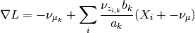
so the update is
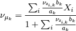
Updating and 
For some odd reason it doesn’t really work when you derive the updates
for a and b using the gradients of the lower bound (terms involving the
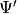 function show up and is hard to isolate).
However, we can use the other formula,
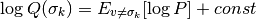
All the terms not involving get folded over into the constant and we get two terms: the prior and the probability of . This gives us
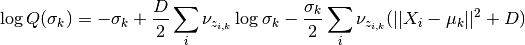
This is the log of a gamma distribution, with 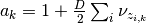 and
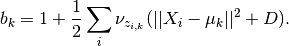
You can verify this by normalizing the previous term.
Updating 
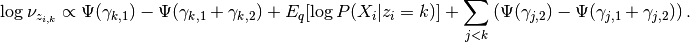
2.1.3.2.2.2. The diagonal model¶
The model then is
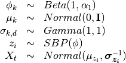
Tha variational distribution we’ll use is
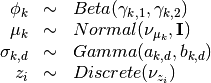
2.1.3.2.2.2.1. The lower bound¶
The changes in this lower bound from the previous model are in the
distributions of  (as there are a lot more s
now) and .
(as there are a lot more s
now) and .
The bound for 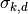 is the same bound for and can be safely omitted.
The bound for :
The main difference here is that the precision matrix 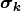 scales the norm, so we have an extra term after computing the expectation of 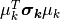, which is 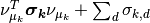. We then have
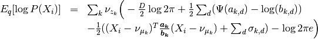
2.1.3.2.2.2.2. The updates¶
The updates only chance for (to weight them with the new
), (but the change is all folded into the
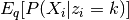 term), and the and variables themselves.
The update for
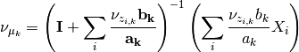
The updates for a and b
Here we’ll do something very similar to the spheric model. The main difference is that now each controls only one dimension of the bound:
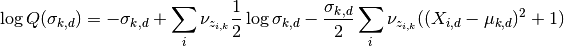
Hence
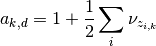
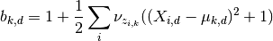
2.1.3.2.2.3. The tied model¶
The model then is
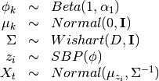
Tha variational distribution we’ll use is
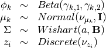
2.1.3.2.2.3.1. The lower bound¶
There are two changes in the lower-bound: for  and for .
and for .
The bound for
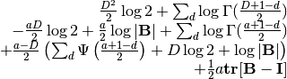
The bound for X
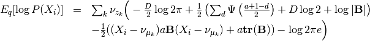
2.1.3.2.2.3.2. The updates¶
As in the last setting, what changes are the trivial update for ,
the update for and the update for and .
The update for
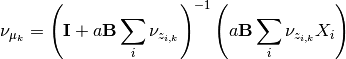
The update for and
As this distribution is far too complicated I’m not even going to try going at it the gradient way.
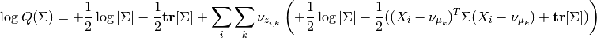
which non-trivially (seeing that the quadratic form with in
the middle can be expressed as the trace of something) reduces to
![\log Q(\Sigma) = +\frac{1}{2}\log |\Sigma| - \frac{1}{2} \mathbf{tr}[\Sigma]
+ \sum_i \sum_k \nu_{z_{i,k}} \left( +\frac{1}{2}\log |\Sigma| - \frac{1}{2}(\mathbf{tr}[(X_i-\nu_{\mu_k})(X_i-\nu_{\mu_k})^T\Sigma]+\mathbf{tr}[I \Sigma]) \right)](../_images/math/6349714eeaa64d23223f87b49aa2c1deae5452e9.png)
hence this (with a bit of squinting) looks like a wishart with parameters
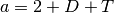
and

2.1.3.2.2.4. The full model¶
The model then is
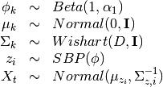
The variational distribution we’ll use is
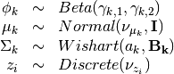
2.1.3.2.2.4.1. The lower bound¶
All that changes in this lower bound in comparison to the previous one
is that there are K priors on different precision matrices
and there are the correct indices on the bound for X.
2.1.3.2.2.4.2. The updates¶
All that changes in the updates is that the update for mu uses only the proper sigma and the updates for a and B don’t have a sum over K, so

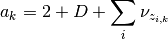
and
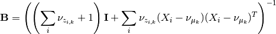